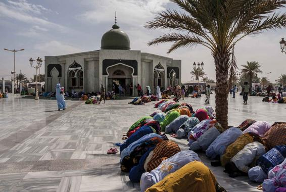

The debate over secularization is one of the most complex areas in the sociology of religion. Basically, the disagreement is between supporters of the secularization thesis (who see religion as diminishing in power and importance in the modern world) and opponents (who argue that religion remains a significant force, albeit often in new and unfamiliar forms).
There is little consensus about how to measure secularization or even how to define religion. Some argue that religion is best understood in terms of the world’s traditional faiths; others seek a much broader view to include dimensions such as personal spirituality and deep commitment to certain values. We can evaluate secularization according to a number of dimensions. Some are objective, such as the level of membership of religious organizations—how many people belong to a church or other religious body and attend services or other ceremonies. With the exception of the United States, the industrialized countries have all experienced considerable secularization according to this index.
The pattern of religious decline seen in Britain is found in most of Western Europe, including predominantly Catholic countries such as France and Italy. More Italians than French attend church regularly and participate in the major rituals (such as Easter Communion), but the overall pattern of declining religious observance is similar in both cases. In France and Germany, less than 10 percent attend weekly religious services; in Belgium, the Netherlands, the United Kingdom, and Luxembourg, 10–15 percent are regular churchgoers. Regular attendance is only marginally higher in Spain (21 percent), Portugal (29 percent), and Italy (31 percent) (Manchin, 2004).
The United States is by far the most religious country among the advanced industrialized nations. Indeed, when sociologists Pippa Norris and Ronald Inglehart (2004) examined data from four World Values Surveys conducted over a 20-year period in 80 societies, they concluded that the United States was one of the most religious nations in the world. A recent survey found that 51 percent of Americans say that religion is very important in their lives, compared to 29 percent in Canada, 21 percent in Italy, 22 percent in Spain, 11 percent in Germany, 11 percent in France, and 10 percent in Japan (Brenan, 2018; Evans and Baronavski, 2018; Lipka, 2019; Pew Research Center, 2018).
In the global south, the story is quite different. In the poorest countries, where people are most vulnerable, religiosity is thriving. This is especially true in parts of the Islamic world, but it can also be seen in the growing strength of Christianity, especially in Africa. In sub-Saharan Africa, the regional average is 89 percent of people who say religion is very important in their lives (Pew Research Center, 2018). A recent report by the Pew Research Center on the future of world religions estimated that 4 out of every 10 Christians in the world will live in sub-Saharan Africa by 2050 (Pew Research Center, 2015a). People who live in the poorest nations are not only more religious than people who live in industrialized ones; they also have much higher fertility rates, so their population is growing more rapidly. As Norris and Inglehart (2004) succinctly put it, “The world as a whole now has more people with traditional religious views than ever before—and they constitute a growing proportion of the world’s population.”
Muslims pray at the Grand Mosque in Senegal. Religion is thriving in the global south, particularly in countries in sub-Saharan Africa, which is projected to be home to a growing share of the world’s Muslims.
A second dimension of secularization concerns how far churches and other religious organizations maintain their social influence, wealth, and prestige. In earlier times, religious organizations wielded considerable power over governments and social agencies and commanded high respect in the community. How much is this still the case? By the twenty-first century, religious organizations had lost much of their former social and political influence, particularly in the advanced industrial nations. Church leaders could no longer expect to be as influential with the powerful. Although some established churches remain very wealthy and some new religious movements have rapidly built up fortunes, the material circumstances of many long-standing religious organizations have become insecure. In the United States, however, since the 1970s, there has been a resurgence in the power of churches, particularly from what has come to be known as the Christian Right. We shall discuss this resurgence later in this chapter.
A third dimension of secularization concerns beliefs and values—the dimension of religiosity. As in the other dimensions, we need an accurate understanding of the past to see how far religiosity has declined today. Supporters of the secularization thesis argue that in the past, religion was far more important to daily life than it is now. The church was at the heart of local affairs and strongly influenced family and personal life. Yet critics of this thesis argue that just because people attended church more regularly does not prove that they were more religious. As two leading sociologists of religion have noted, most Americans during Colonial times were far from puritanical, even though American schoolchildren are raised on images of pious Pilgrims bowed in prayer over Thanksgiving turkey. According to Roger Finke and Rodney Stark (2005), “Boston’s taverns were probably fuller on Saturday night than were its churches on Sunday morning.” Finke and Stark go on to argue that Americans are in fact more religious today on the whole than they were in Colonial times—largely because there are more religions to choose from, as we shall see in the following section of this chapter.
On balance, it does seem that the hold of religious ideas today is weaker than in the traditional world—particularly if we include the range of the supernatural. Most of us no longer experience our environment as permeated by divine or spiritual entities that need to be worshipped and placated, lest they do us harm. It is certainly true that some of the major tensions in the world today—such as those afflicting the Middle East or the violence perpetrated by ISIS—derive from religious differences. But the majority of conflicts and wars remain secular, concerned with divergent political goals or material interests, although these may coincide with ethnic and religious differences.
CONCEPT CHECKS
Why did Karl Marx call religion “the opium of the people”?
What are the differences between classical and contemporary approaches to understanding religion?
Does the Pew study provide support for the religious economy approach? Why or why not?